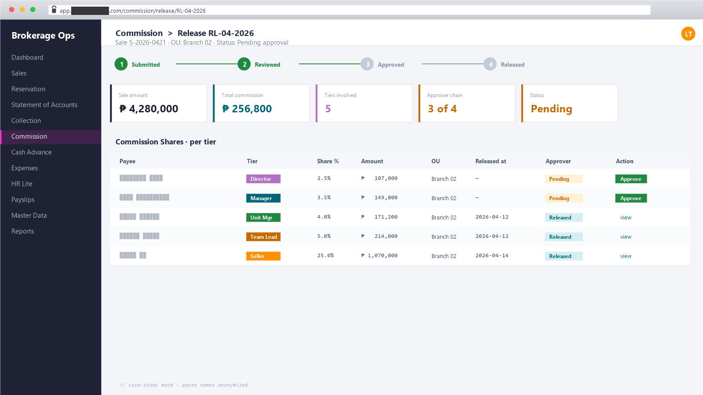

Brokerage Commission System
Real-estate brokerage operations on Vue + Laravel
A full-stack platform that runs a real-estate brokerage end-to-end — sales pipeline, multi-tier commission engine with approver workflow, multi-OU RBAC, expenses, and HR-lite — replacing a tangle of spreadsheets with one auditable source of truth.
Excel-based commission splits across multiple operating units; reconciliation by hand each period.
52-model platform with 5-tier automated payouts; reconciliation is a query.
Each ops team kept its own spreadsheet; visibility ended at the team boundary.
One platform with scoped multi-OU RBAC; managers see across teams without seeing across boundaries.
Migration history was a pile of timestamps; tracing a column change took grep + memory.
~100 migrations + ~640 commits browsable by feature; schema history is auditable.
What it is
A platform that runs the day-to-day operations of a real-estate brokerage: property catalog, sales pipeline, multi-tier commission engine with approver workflow, multi-OU (multiple branches / sister brokerages) role-based access, plus expenses, cash advances, and HR-lite for payslips and memos.
Built as a Vue.js admin frontend on the Velzon theme, talking to a Laravel REST API with Sanctum auth. Around 50+ Eloquent models, ~100 migrations, and ~640 combined commits across ~22 months of iteration with the operations team.
The bottleneck
Real-estate brokerage commissions are unusually messy. A single sale can split payouts across multiple agents, sales teams, and the brokerage itself, with releases happening over many periods as the buyer pays installments — and the client operates several organizational units (OUs) that need their own data boundaries while sharing the same platform.
- Commission shares tracked in spreadsheets, with no single source of truth when a buyer’s payment schedule slipped.
- No clear approval trail when a release was authorized — signoffs lived in email and printed forms.
- Sales records, statements of account, and collection records lived in separate workbooks that drifted apart.
- Access control was “send the whole file to whoever needs a view”, which doesn’t scale to multiple OUs with overlapping but distinct roles.
- Expenses, cash advances, and payslips were a parallel manual workflow with its own spreadsheets.
The operations team needed one platform that owns sales, commissions, releases, collections, expenses, and HR-lite, with per-OU role-based access and an auditable approval workflow on the releases that actually move money.
How I broke it down
- Domain modelling first. Talked through the commission lifecycle with real users before writing schema — sales record → commission transaction → commission shares (per payee) → commission releases (per period) with an approver chain.
- Vue + Laravel monolith API. Single deployment, single team. No microservices theater for a brokerage-sized product.
- RBAC scoped per organizational unit. Built from scratch: roles, permissions, role-to-OU bindings, per-user menu access. Avoided a one-size-fits-all admin/agent split because the real org has more shades.
- Velzon admin theme as the UI foundation. Bought the accelerator on UI primitives (tables, forms, modals, dashboards) so I could spend the time on the commission-specific workflows instead.
- Iterative schema evolution. ~100 migrations over 22 months — many of them add_column follow-ups as new edge cases surfaced in production.
What I built
Domain modules:
- Property & project catalog —
Project,Developer,PropertyListing,HouseModel,UnitType,SubUnitType,PropertyImage. Photos, pricing, ownership history. - Sales pipeline —
Prospect,ProspectStatus,MasterList,Sales,SalesRecord,SalesTeam. From lead to closed deal, with team attribution. - Statement of Accounts —
StatementOfAccount+GenerateSoajob. Per-buyer ledger tied to the unit and the sale. - Collection tracking —
CollectionRecordandBankreconciliation against expected installments. - Commission engine —
CommissionTransaction,CommissionShare,CommissionRelease(with aV2rewrite once the first model bumped into edge cases),RealtyCommission,Release+ReleaseAgent, gated byApprover. - Cash advance system —
CashAdvancewithCashAdvancePayTermdeduction schedules tied to upcoming releases. - Expense management —
Expense,ExpenseCategory,ExpenseParticular,Payee. Per-OU expense ledger with payee-aware particulars. - HR-lite —
EmployeePayslip,EmployeeLeave,EmployeeMemo,EmployeeDownloadableForm,DownloadableForm,Memo. - RBAC + multi-OU —
User,Role,CommonPermission,CommonRolePermission,CommonRoleOU,CommonUserRoles,UserMenuAccess,Module,Menu,OU. Granular access per module per branch. - Multi-language UI —
i18n.js+lang/bundles for translated views.

Example: commission share computation — the heart of the engine, because rules vary by sale agreement, agent tier, and OU policy:
class CommissionShareService { public function distribute(SalesRecord $sale): Collection { return $sale->commissionTransactions ->flatMap(fn (CommissionTransaction $tx) => $tx->shares ->map(fn (CommissionShare $s) => [ 'payee_id' => $s->payee_id, 'ou_code' => $s->ou_code, 'amount' => round($tx->amount * $s->percent / 100, 2), 'period' => $tx->period, 'release_id' => null, // set when approver releases ])); } }
Tech
- Frontend: Vue.js (Vue CLI), Vue Router, state/ store, Vue i18n, Velzon admin theme, SCSS
- Backend: Laravel, MySQL, Eloquent, Sanctum personal-access tokens, REST API
- Domain layer: 52 Eloquent models, ~100 migrations, per-OU policy services, approver workflow
- Tooling: VS Code · Git · GitHub · Composer · Yarn · Postman
- Source: commission_management_api · commission_management_ui
Results
The brokerage replaced its multi-workbook commission process with a single platform where a sale, its installments, its approver chain, and its agent payouts all live in one auditable ledger — with role-based views per organizational unit. Cash advances now reconcile against upcoming releases automatically. Expenses, payslips, leaves, and memos run on the same backbone instead of parallel spreadsheets.
Specific business figures stay with the client; happy to discuss specifics on request.
What I’d do again — and differently
Worked well:
- Modeling the commission lifecycle as four explicit nouns — transaction, share, release, approver — instead of cramming it into one “commission” table. Every edge case that landed in production had a place to live.
- Buying the UI foundation (Velzon) instead of designing from scratch — let me ship the operations-team value faster while keeping a consistent admin look.
- Iterative migrations. ~100 of them, many small. The team never had a multi-week schema-rewrite outage — just continuous small changes deployed alongside the features that needed them.
Would tighten:
- Use a battle-tested RBAC package next time. Building roles + permissions + OU bindings + menu access from scratch was thorough but expensive. Spatie’s Laravel-Permission would have covered ~80% in a day, leaving only the OU-scoping to write.
- CommissionRelease v1 → v2 cost a refactor. The first release model didn’t separate “computed share” from “released amount” cleanly — once the second version made that distinction explicit, downstream reports got simpler. I’d invest in that separation upfront.
- Migrate to Vite earlier. The Vue CLI build still works but the rebuild loop is slow at this scale — new projects start on Vite.
- Tag the migration log. ~100 migrations means many small add_column follow-ups; a clearer naming convention would have made the history readable.